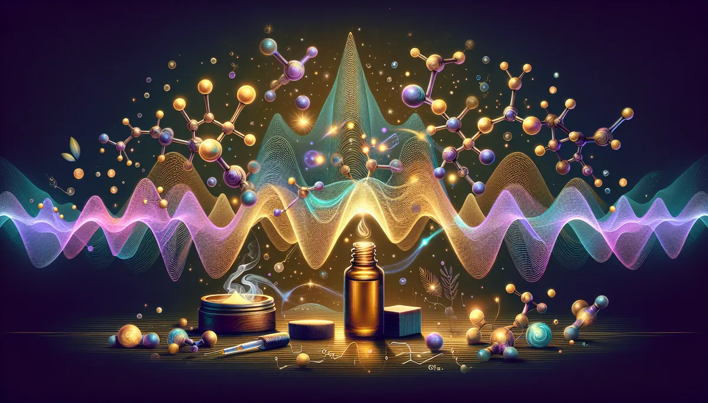

STRESS OIL RX
🫧
你的壓力，長成什麼形狀？
壓力不是一個大小的問題，是形狀的問題。有的人的壓力像刺蝟球，有的像深海，有的像荒漠，有的像龍捲風。形狀不同，解方就不同。
20 題自律神經覺察，找到你的專屬精油解方。
🫧 20 題 · 約 5 分鐘 · 12 種壓力形狀 · 馥靈之鑰獨家
第 1 題
0%
看看我的壓力形狀 🫧
📥 儲存圖片
🧵 分享到 Threads
📋 複製結果
💬 分享到 LINE
🔄 重新測一次
✨ 更多覺察測驗
💅
指尖能量色
🧖
SPA 處方箋
🌬️
情緒味道
🔥
倦怠指數